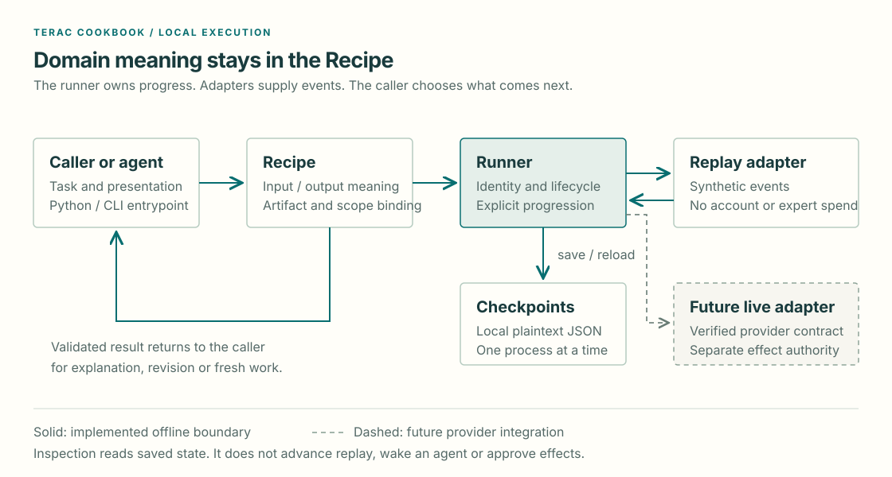

Cookbook 0.2.0.dev1
Architecture
A Recipe defines the work. The shared Runner owns lifecycle and saved progress. Adapters supply events without taking over the Recipe's meaning.
Terac Cookbook is a local Python package. Python and the terac-oracle CLI call
Oracle directly. cookbook_app explicitly composes Oracle,
the recipe catalog and the local MCP adapter. Replay is the default
execution path and uses synthetic events without provider requests or expert spend.

Keep the responsibilities clear
| Component | Owns |
|---|---|
| Calling agent | Task context, presentation, revision and the next request |
cookbook_app |
Explicitly composes Oracle, the catalog and MCP tool binding |
| Recipe catalog | Code-supplied composition and read-only discovery; duplicate recipe IDs are rejected |
| Recipe | Domain input/output meaning, exact artifact binding and result validation |
| Runner | Run identity, lifecycle and explicit progression; persists opaque recipe and adapter payloads |
| Checkpoint storage | Saved local state and validated reload |
| Replay adapter | Synthetic events and controlled scheduling |
| Terac diagnostics | Bounded REST context and hosted MCP discovery/context reads; operator-only and separate from Oracle |
| Future fulfillment adapter | A verified task/report binding and declared authority before any expert-work effect |
The runner does not interpret GTM feedback. Oracle does not own transport or rewrite the brief. An adapter does not decide whether a review passes.
Recipes are explicit Python implementations with documented entrypoints. The code-supplied catalog composes the initial Recipe set and supports read-only MCP discovery; it does not dynamically load plug-ins or execute YAML recipes. Oracle is the only product Recipe today. Shared behavior should grow only when another product Recipe demonstrates a need for it.
Delivery scope
The v0.1–v1.0 baseline is local Oracle replay, direct Python/CLI access,
cookbook_app-composed local MCP, read-only Terac diagnostics, packaged
installation and contributor acceptance. v2.0+ remains optional and should follow
demonstrated use; it is not part of the current runtime contract.
Four actions, explicit progress
| Action | Caller-visible behavior |
|---|---|
start |
Bind an exact input to a new run and save its initial waiting state |
inspect |
Read waiting, clarification, feedback or failure without advancing |
respond |
Save an answer to the current clarification without releasing another event |
resume |
Reattach and release at most one replay event; paused or terminal work returns saved state |
Linked work is another start, carrying parent_id and an explicit follow_up
or new_query intent. It creates fresh work, preserves the parent and does not
inherit the parent's recommendation. These are still four caller actions.
The caller retains its run identifier and chooses when to reattach. Saving a checkpoint does not wake an agent or schedule a worker.
State is different from a recommendation
Run status describes workflow delivery. Phase describes current work. The Recipe defines the meaning of its result.
For Oracle, a succeeded run means validated feedback was delivered. That review
can recommend pass, fail or inconclusive. Malformed feedback or a wrong
artifact/scope binding is never delivered as a review. Replay records workflow
failure without changing the saved run's delivered result.
Keep these facts separate: run completion, expert delivery, recommendation, caller revision, and provider labor/payment state. A changed artifact has no inherited verdict. Feedback grants no authority for further effects.
Replay, restart and compatibility
Each replay run pins its case, checkpoint/recipe/fixture versions and a semantic fixture digest. A linked lineage validates each ancestor against its own pin. Whitespace and JSON object-key order do not change fixture identity; changed events, cases or versions do.
Restart uses the same state directory and run identifier. Reload checks identity,
scope, lifecycle, replay position and lineage before returning state. Old-format,
unsupported or altered checkpoints return checkpoint_incompatible without
rewriting saved bytes.
Storage uses atomic replacement of local plaintext JSON and supports one process at a time. Concurrent writers, encryption, expiry, automatic retries, cancellation, deadlines and production recovery are outside the current guarantees.
Transport and provider boundaries
Inbound means a caller invokes Cookbook. Outbound means Cookbook invokes a provider such as Terac. These directions have distinct authentication and deployment responsibilities.
The baseline exposes inbound Python, CLI and optional local-stdio MCP calls. Replay is the default. An optional reviewed binding enables a read-only attachment to one exact study; credentials alone never select live operation or establish content compatibility.
The MCP process owns protocol schemas, bounded error responses and serialization
within one process. It exposes cookbook_list_recipes and oracle_start,
oracle_inspect, oracle_respond, oracle_resume. It calls Oracle's existing
methods; it adds no second execution model. Discovery reports Oracle and its
replay case catalog and whether a reviewed live binding is configured. Discovery
does not read or advance runs.
Inbound Cookbook MCP is separate from outbound Terac MCP/REST and the provider's
hosted connector. Without a reviewed binding, the Cookbook process makes no
provider requests and reads no provider credentials. With one configured,
attaching and inspecting remain local; an explicit resume performs bounded
read-only context and exact-study status/cost reads. It does not create or launch
work or retrieve expert feedback. SDK stdio checks do not establish acceptance
inside a named client application. See the MCP contract for response
formats and launch limits.
Expert fulfillment still needs an agreed caller contract and observed evidence for submission, progress, clarification, substantive delivery, errors and uncertain writes. A provider status or successful login does not establish a delivered review. Reconcile an uncertain submission before retrying effects.
Disclosure, recruitment, spend, follow-up, payment, rejection and publication each require declared authority. Replay fixtures and published responses also need rights and privacy clearance for their exact version and audience.
Read-only context is a separate diagnostic
The Python context reader performs one bounded REST read and discards provider values after shape validation. The Oracle study reader uses a separately reviewed binding and only explicit resumption to observe safe status and cost fields. Windows operator scripts provide separate credential setup and a bounded REST/hosted-MCP diagnostic. None of these reads submit work or retrieve a report. See Terac access.
Extend the smallest useful seam
Agree the new Recipe's inputs, outputs, permitted effects and failure cases before runtime code. Demonstrate them through the caller interface with fake providers and synthetic fixtures. Include packaged assets and verify installation outside the checkout. See Contributing.
These boundaries support local, inspectable examples. Hosted execution, a shared database and generic orchestration are separate design decisions that need a concrete workflow and acceptance evidence.